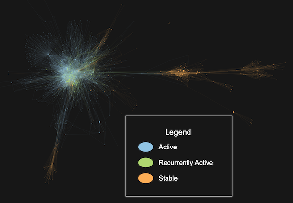

Architectures |
Graphs and Charts |
Interactive Reports |
| Group your files to calculate dependencies and metrics, build graphs, and tag entities. More |
Create custom graphs and charts. More |
Combine graphs, tables, trees, and headings into exportable documents. More |
 |
 |
 |
Metrics |
CodeCheck |
Solution: Git |
| Calculate custom metrics to export, sort, or color by. More |
Validate your code against published standards and find vulnerabilities. More |
Access authors and dates and find technical debt from recurrently active files, coupling, and minor contributors. More |
 |
|
 |
Solution: HIS Metrics |
|
|
| Enforce code quality with Hersteller Initiative Software (HIS) metrics. More |
|
|
 |
|
|